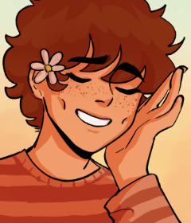
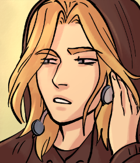
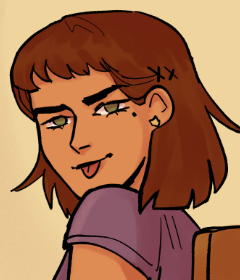
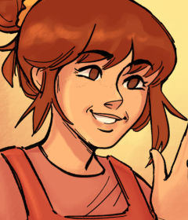
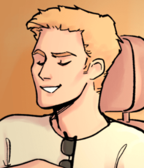
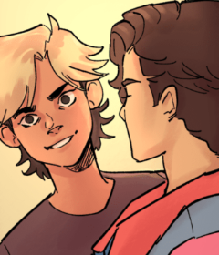
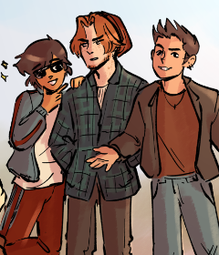
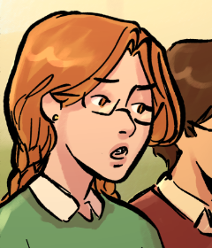
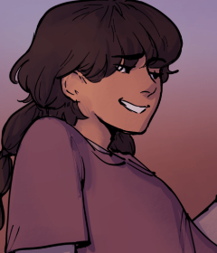
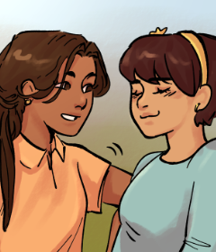

Cast List
Characters
The main cast and most important supporting cast of both Peanut Soup books can be found here.

Main Cast
Merritt Antonio Mamani
Merritt is a little ray of sunshine who's sometimes lost in the clouds. He befriends Nikolai despite appearences, and is perhaps a little too friendly too soon.
- Likes: his sketchbook, laughing, observing nature and people
- Birthday: May 24th, 1974 (15 at the start of the story)
- Fun Fact: Fluent in Spanish

Main Cast
Nikolai Petrovich Volkov
Nik is a regular rebellious teen in the surface, looking cool and collected, but internally he's much less impressive than that. And he's gay in the early 90s' so there's that...
- Likes: his comfort hoodie, smoking to look cool, being left alone
- Birthday: January 19th, 1975 (14 at the start of the story)
- Fun Fact: Is slightly obsessed with Grease, the musical

Supporting Cast
Samira Azar
Sam likes to draw with Merritt and they hang out with mutual friends a lot, mostly due to her exceptional social skills. She might or might not have a little crush on him.
- Likes: artistic and DIY projects, reinventing herself, including friends in activities
- Birthday: October 1st, 1974
- Fun Fact: Honour Roll student but doesn't advertise it

Supporting Cast
Ana Belén
Ana Belén is a rather young mom and a hard-working flight attendant married to Randy, Merritt's step dad. She has picked up many languages in her line of work and often makes peanut soup, a classic Bolvian dish her grandmother passed down to her.

Supporting Cast
Mikhail
Mikhail or Misha is Nikolai's older brother. He's in the military and is the family's golden boy. He is charismatic, handsome and is often right, which greatly annoys Nikolai (nicknamed Kolya, for Mikhail).

Supporting Cast
Lippi & Lou
Lippi (Felipe) and Lou (Louis) are troublesome kids. Lippi, seen on the left, tends to start conflicts. Lou tends to just look intimidating.

Supporting Cast
The Dropouts
These guys hang around certain streets in Nikolai's way to school. They are the definition of "the wrong crowd" but they're surprsingly patient and supportive towards the rebellious youth.
Abe, in the middle, tends to take a leader position. He dislikes Mikhail with a consistent passion. Dante, on the right, likes to set things on fire. Sunny, on the left, is the personality hire.
Supporting Cast
Tudor
Simon Tudor is a math whiz and co-president of the student council with Helen. He is not-so-secretly a hopeless romantic and intersted in all kinds of gossip, as long as it ends in romance. Many call him "Tudor the tutor".

Background
Helen
Goody-two-shoes Helen is co-president of the student council with Tudor. She likes to do things right and is perhaps a little naive. She likes wearing skirts and twirling in them.

Background
Roof Girl
A friend or a stranger? Maybe just a kid who hangs out on roofs. Nikolai's neighbor is quite mysterious but likes to offer advice from time to time.

Background
Imani & Dalia
Imani, on the left, and Dalia, on the right, are Sam's close-knit group of girl-friends. They like to match their milestones and support each other in their achievments. Imani is known for her sense of humour and go-getter personality. Dalia is sweet, loves any type of joke, and doesn't say much at all.